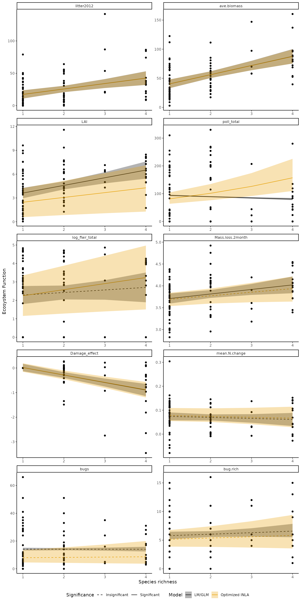

Setup
This is an R Markdown document describing the empirical analyses conducted in Tsang et al. (2024). Again, you will need to install and load multiple packages and data.
library(phytools)
library(tidyverse)
library(CPR)
library(INLA)
data("KSR")
data("KSR_MLtree")
data("KSR_EF")Let’s get the variane covariance matrix at species and community level.
VCV_sp <- vcv(KSR_MLtree) #species level phyologenetic covariance matrix using default (Brownian) model
VCV_sp <- VCV_sp[order(rownames(VCV_sp)),order(colnames(VCV_sp))]
VCV_comm <- get_comm_pair_r(KSR,VCV_sp)
VCV_comm[1:5,1:5]
#> [,1] [,2] [,3] [,4] [,5]
#> [1,] 1.0000000 0.7031681 0.5639611 0.5601336 0.7539047
#> [2,] 0.7031681 1.0000000 0.5458038 0.5420995 0.7048548
#> [3,] 0.5639611 0.5458038 1.0000000 0.9932127 0.5749535
#> [4,] 0.5601336 0.5420995 0.9932127 1.0000000 0.5710514
#> [5,] 0.7539047 0.7048548 0.5749535 0.5710514 1.0000000The KSR_EF data have multiple ecosystem function.
head(KSR_EF)
#> Plot Real.rich Legume Hed PD MNND MPD H
#> 1 X2 1 N 0.0000000 0.0000 0.0000 0.0000 0.0000000
#> 2 X3 4 LP 1.3772918 456.7786 136.7786 258.9262 1.1761865
#> 3 X4 2 N 0.6931472 320.0000 320.0000 320.0000 0.2249718
#> 4 X7 1 N 0.0000000 0.0000 0.0000 0.0000 0.0000000
#> 5 X8 3 LP 1.0934269 418.9892 238.6522 279.3261 0.7560967
#> 6 X9 1 N 0.0000000 0.0000 0.0000 0.0000 0.0000000
#> Simp biomass2012 litter2012 biomass2013 biomass2014 ave.biomass
#> 1 0.0000000 47.89 79.05 35.39 15.64 32.97333
#> 2 0.6712373 122.24 74.23 74.33 50.66 82.41000
#> 3 0.1115254 77.93 34.50 59.62 51.23 62.92667
#> 4 0.0000000 44.37 36.32 44.69 14.09 34.38333
#> 5 0.5120332 166.82 21.46 148.84 125.51 147.05667
#> 6 0.0000000 44.37 37.26 32.12 24.92 33.80333
#> Light.tau LAI C.change.deep C.change.surf N.change.deep N.change.surf
#> 1 0.312 1.67 -0.331 -0.031 0.007 -0.010
#> 2 0.031 5.53 1.762 0.111 -0.046 -0.009
#> 3 0.100 3.04 -0.518 0.421 -0.012 0.024
#> 4 0.083 3.42 -0.156 -0.009 -0.087 -0.028
#> 5 0.006 7.14 NA NA -0.045 0.031
#> 6 0.499 1.01 -1.895 -0.128 0.066 0.017
#> mean.N.change poll_total flwr_total Mass.loss.1month Mass.loss.2month
#> 1 -0.0015 20 43113.5000 2.891 3.362
#> 2 -0.0275 53 2126.1429 3.147 3.718
#> 3 0.0060 150 324.4286 2.972 3.521
#> 4 -0.0575 0 0.0000 2.714 3.328
#> 5 -0.0070 0 0.0000 3.283 3.608
#> 6 0.0415 0 0.0000 3.020 3.627
#> GRASS SOAL MOFI ASTU DECA Damage_effect bugs bug.rich
#> 1 NA NA NA NA NA 0.0000000 9 7
#> 2 -0.34584386 NA NA NA 0.04572438 -0.3001195 7 6
#> 3 -0.04241343 NA -0.3771144 NA NA -0.4195279 4 2
#> 4 NA NA NA NA NA 0.0000000 5 3
#> 5 -2.74600928 NA NA NA NA -2.7460093 4 4
#> 6 NA NA NA NA NA 0.0000000 11 7Data description
| Variable | Description |
|---|---|
| Plot | Plot identity |
| Real.rich | Number of species planted |
| litter2012 | Amount of litter measured in 2012 |
| ave.biomass | Average biomass across 2012-2014 |
| LAI | Leaf area index, a simplified dimension of structural complexity |
| mean.N.change | delta 15N change averaged across surface and deep soil |
| poll_total | Total number of pollinators |
| flwr_total | Total number of flowers |
| Mass.loss.2month | Decomposition after 2 months |
| Damage_effect | Damage reduction effect |
| bugs | Total number of arthropods |
| bug.rich | Species richness of arthropods |
Empirical analyses - Single function
We repeated the analyses in Cadotte et al. (2017), involving ten ecosystem functions. If only one ecosystem function is of interest (or if you don’t mind your code is clunky), you can just use INLA and write similar functions ten times. For example, let’s analyze flower abundance.
INLA is a very powerful package, but can be a bit complicated to use. As it is a Bayesian analysis, we have to specify priors. INLA has different default priors and check their website if you are interested. Here, we will use the penalizing complexity prior. The specification is identical with the phyr, an R package for Bayesian community PGLMM.
KSR_EF$log_flwr_total <- log10(KSR_EF$flwr_total+1) #log-transforming floral abundance to facilitate covnergence in INLA
KSR_EF$comm <- 1:nrow(KSR_EF) #need to create an unique identifier for each comm in INLA
m <- lm(log_flwr_total~Real.rich,data=KSR_EF)
sdres <- sd(residuals(m))
param <- c(3*sdres,0.01)
prior1 <- list(prec=list(prior="pc.prec"),param=param) #You can specify your own prior too.
f <- log_flwr_total~Real.rich+f(comm,model="generic0",Cmatrix=P.lambda,hyper=list(prec = prior1)) #start with the formula. Note that P.lambda is just a placeholder
ML.opt2<-optim(runif(1,0.2,0.8),
likelihood.lambda.INLA,
inla_formula= f,
family="gaussian",
data=KSR_EF,
phyV=VCV_sp,
comm=KSR,
prior = list(prior1 = prior1),
control.compute = list(waic=T),
method="L-BFGS-B",
lower=0.0,
upper=1.0,
control=list(factr=1e9)) #Slow
lambda_INLA<-ML.opt2$par
wAIC <- ML.opt2$value
VCV_sp_INLA <- VCV_sp*lambda_INLA
diag(VCV_sp_INLA) <- diag(VCV_sp)
C.lambda.INLA<- get_comm_pair_r(KSR,VCV_sp_INLA)
prec.mat.INLA <- solve(C.lambda.INLA) #note that INLA requires a precision matrix, not a VCV
optim_m <- inla(log_flwr_total~Real.rich+f(comm,
model="generic0",
Cmatrix=prec.mat.INLA,
hyper=list(prec = prior1)),
data=KSR_EF)
lm_m <- inla(log_flwr_total~Real.rich,
data=KSR_EF)
summary(optim_m)
#>
#> Call:
#> c("inla.core(formula = formula, family = family, contrasts = contrasts,
#> ", " data = data, quantiles = quantiles, E = E, offset = offset, ", "
#> scale = scale, weights = weights, Ntrials = Ntrials, strata = strata,
#> ", " lp.scale = lp.scale, link.covariates = link.covariates, verbose =
#> verbose, ", " lincomb = lincomb, selection = selection, control.compute
#> = control.compute, ", " control.predictor = control.predictor,
#> control.family = control.family, ", " control.inla = control.inla,
#> control.fixed = control.fixed, ", " control.mode = control.mode,
#> control.expert = control.expert, ", " control.hazard = control.hazard,
#> control.lincomb = control.lincomb, ", " control.update =
#> control.update, control.lp.scale = control.lp.scale, ", "
#> control.pardiso = control.pardiso, only.hyperparam = only.hyperparam,
#> ", " inla.call = inla.call, inla.arg = inla.arg, num.threads =
#> num.threads, ", " keep = keep, working.directory = working.directory,
#> silent = silent, ", " inla.mode = inla.mode, safe = FALSE, debug =
#> debug, .parent.frame = .parent.frame)" )
#> Time used:
#> Pre = 0.223, Running = 0.307, Post = 0.0142, Total = 0.544
#> Fixed effects:
#> mean sd 0.025quant 0.5quant 0.975quant mode kld
#> (Intercept) 1.925 0.478 0.987 1.925 2.865 1.925 0
#> Real.rich 0.330 0.126 0.083 0.330 0.578 0.330 0
#>
#> Random effects:
#> Name Model
#> comm Generic0 model
#>
#> Model hyperparameters:
#> mean sd 0.025quant 0.5quant
#> Precision for the Gaussian observations 2.430 0.401 1.725 2.40
#> Precision for comm 0.511 0.158 0.264 0.49
#> 0.975quant mode
#> Precision for the Gaussian observations 3.299 2.352
#> Precision for comm 0.881 0.452
#>
#> Marginal log-Likelihood: -696.39
#> is computed
#> Posterior summaries for the linear predictor and the fitted values are computed
#> (Posterior marginals needs also 'control.compute=list(return.marginals.predictor=TRUE)')
summary(lm_m)
#>
#> Call:
#> c("inla.core(formula = formula, family = family, contrasts = contrasts,
#> ", " data = data, quantiles = quantiles, E = E, offset = offset, ", "
#> scale = scale, weights = weights, Ntrials = Ntrials, strata = strata,
#> ", " lp.scale = lp.scale, link.covariates = link.covariates, verbose =
#> verbose, ", " lincomb = lincomb, selection = selection, control.compute
#> = control.compute, ", " control.predictor = control.predictor,
#> control.family = control.family, ", " control.inla = control.inla,
#> control.fixed = control.fixed, ", " control.mode = control.mode,
#> control.expert = control.expert, ", " control.hazard = control.hazard,
#> control.lincomb = control.lincomb, ", " control.update =
#> control.update, control.lp.scale = control.lp.scale, ", "
#> control.pardiso = control.pardiso, only.hyperparam = only.hyperparam,
#> ", " inla.call = inla.call, inla.arg = inla.arg, num.threads =
#> num.threads, ", " keep = keep, working.directory = working.directory,
#> silent = silent, ", " inla.mode = inla.mode, safe = FALSE, debug =
#> debug, .parent.frame = .parent.frame)" )
#> Time used:
#> Pre = 0.184, Running = 0.261, Post = 0.00939, Total = 0.455
#> Fixed effects:
#> mean sd 0.025quant 0.5quant 0.975quant mode kld
#> (Intercept) 2.151 0.378 1.408 2.151 2.893 2.151 0
#> Real.rich 0.138 0.171 -0.199 0.138 0.474 0.138 0
#>
#> Model hyperparameters:
#> mean sd 0.025quant 0.5quant
#> Precision for the Gaussian observations 0.324 0.049 0.235 0.321
#> 0.975quant mode
#> Precision for the Gaussian observations 0.426 0.317
#>
#> Marginal log-Likelihood: -192.46
#> is computed
#> Posterior summaries for the linear predictor and the fitted values are computed
#> (Posterior marginals needs also 'control.compute=list(return.marginals.predictor=TRUE)')Empirical analyses - Multiple functions
In my case, I used lapply to analyze all ecosystem function. So the codes are more complicated. Let’s define a function for the analysis first.
ef_empiricial <- function(ef_data,x,VCV_sp,names,ef_properties,comm,family) {
print(ef_properties)
y <- ef_data
df <- data.frame(y=y,x=x)
df$comm <- 1:nrow(df)
m <- glm(y~x,
family = family,
data = df)
summary(m)
m_sig <- summary(m)$coefficients[2,4]
sdres <- sd(residuals(m))
param <- c(3*sdres,0.01)
prior1 <- list(prec=list(prior="pc.prec"),param=param)
ML.opt2<-optim(runif(1,0.2,0.8),
likelihood.lambda.INLA,
inla_formula = f,
family = family,
data = df,
phyV = VCV_sp,
comm = KSR,
prior = list(prior1 = prior1),
control.compute = list(waic=T),
method = "L-BFGS-B",
lower = 0.0,
upper = 1.0,
control = list(factr=1e9))
lambda_INLA<-ML.opt2$par
wAIC <- ML.opt2$value
V_INLA <- VCV_sp*lambda_INLA
diag(V_INLA) <- diag(VCV_sp)
C.lambda.INLA<- get_comm_pair_r(comm,V_INLA)
newobs <- data.frame(y=NA,x=unique(x),comm=NA)
INLA_df <- rbind(df,newobs)
m2_INLA_LM <- inla(y~x,
data=INLA_df,
family=family,
control.compute = list(dic=T,waic=T))
m2_INLA_LM <- inla.rerun(m2_INLA_LM)
wAIC_LM <- m2_INLA_LM$waic$waic
m2_INLA_LM_r2<- cor(m2_INLA_LM$summary.fitted.values[1:(nrow(df)),"mean"],df$y)^2
prec.mat.INLA <- solve(C.lambda.INLA)
m2_INLA_optim <- inla(y~x+f(comm,
model="generic0",
Cmatrix=prec.mat.INLA,
prior = "pc.prec",
hyper= c(3*sd(residuals(m)),0.01)),
family = family,
data = INLA_df,control.predictor=list(compute=TRUE),
control.compute = list(dic=T,waic=T),
safe=T,
control.inla = list(tolerance = 1e-10))
m2_INLA_optim <- inla.rerun(m2_INLA_optim) # https://groups.google.com/g/r-inla-discussion-group/c/qkoV9ZtA1Wo
m2_INLA_optim <- inla.rerun(m2_INLA_optim) # https://groups.google.com/g/r-inla-discussion-group/c/qkoV9ZtA1Wo
summary(m2_INLA_optim)
if(family == "poisson") {
m2_INLA_optim_predict <- exp(m2_INLA_optim$summary.fitted.values[-1:-(nrow(df)),])
} else {
m2_INLA_optim_predict <- m2_INLA_optim$summary.fitted.values[-1:-(nrow(df)),]
}
m2_INLA_optim_predict <- data.frame(newobs$x,m2_INLA_optim_predict[,c("mean","0.025quant","0.975quant")])
m2_INLA_optim_predict$sig <- ifelse(sign(m2_INLA_optim$summary.fixed)[2,3] == sign(m2_INLA_optim$summary.fixed)[2,5],-1,1)
m2_INLA_optim_r2 <- cor(m2_INLA_optim$summary.fitted.values[1:nrow(df),"mean"],df$y)^2
library(ggeffects)
m_predict <- data.frame(ggeffect(m,terms="x"),sig=m_sig)
m_predict <- m_predict[,c(1,2,4,5,7)]
colnames(m2_INLA_optim_predict) <- colnames(m_predict)
###summarize the data into a dataframe
predict_df <- rbind(cbind(m_predict,
model="LM/GLM",
ef=ef_properties,
lambda=NA,
hyper_Gaussian = NA,
hyper_Comm = NA,
wAIC = wAIC_LM,
r2=m2_INLA_LM_r2,
mean=m2_INLA_LM$summary.fixed[2,1],
lower_quant=m2_INLA_LM$summary.fixed[2,3],
upper_quant=m2_INLA_LM$summary.fixed[2,5]),
cbind(m2_INLA_optim_predict,
model="Optimized INLA",
ef=ef_properties,
lambda=lambda_INLA,
hyper_Gaussian=m2_INLA_optim$summary.hyperpar[1,1],
hyper_Comm =m2_INLA_optim$summary.hyperpar[2,1],
wAIC=wAIC,
r2=m2_INLA_optim_r2,
mean=m2_INLA_optim$summary.fixed[2,1],
lower_quant=m2_INLA_optim$summary.fixed[2,3],
upper_quant=m2_INLA_optim$summary.fixed[2,5]))
return(predict_df)
}Now let’s run it.
ef_name <- c("litter2012","ave.biomass","LAI","bug.rich","bugs","poll_total","log_flwr_total","Mass.loss.2month","Damage_effect","mean.N.change") #ecosystem functions analyzed
ef <- KSR_EF[,ef_name]
C <- get_comm_pair_r(KSR,VCV_sp)
f <- y~x+f(comm,model="generic0",Cmatrix=P.lambda,hyper=list(prec = prior1))
family <- ifelse(ef_name == "bug.rich" | ef_name == "bugs" | ef_name == "poll_total",
"poisson",
"gaussian")
df <- data.frame(x=KSR_EF$Real.rich) #seems that ggeffect can only extract variables from global environments
predict_df <- lapply(1:ncol(ef),function(x) ef_empiricial(ef_data=ef[,x],
x=KSR_EF$Real.rich,
VCV_sp=VCV_sp,
ef_properties=ef_name[x],
comm=KSR,
family=family[x]))
#> [1] "litter2012"
#> [1] "ave.biomass"
#> [1] "LAI"
#> [1] "bug.rich"
#> [1] "bugs"
#> [1] "poll_total"
#> [1] "log_flwr_total"
#> [1] "Mass.loss.2month"
#> [1] "Damage_effect"
#> [1] "mean.N.change"
predict_df <- do.call(rbind,predict_df)
predict_df$x <- predict_df$x
predict_df$sig_binary <- ifelse(predict_df$sig < 0.05,"Significant","Insignificant")Data visualization
Now let’s visualize the findings
library(ggplot2)
library(tidyverse)
plot_data <- KSR_EF %>%
select(any_of(ef_name)|"Real.rich") %>%
pivot_longer(!Real.rich,names_to="ef")
plot_data$ef <- fct_relevel(plot_data$ef,
"litter2012",
"ave.biomass",
"LAI",
"poll_total",
"log_flwr_total",
"Mass.loss.2month",
"Damage_effect",
"mean.N.change",
"bugs",
"bug.rich")
predict_df$ef <- fct_relevel(predict_df$ef,
"litter2012",
"ave.biomass",
"LAI",
"poll_total",
"log_flwr_total",
"Mass.loss.2month",
"Damage_effect",
"mean.N.change",
"bugs",
"bug.rich")
predict_df$ratio <- predict_df$hyper_Gaussian/predict_df$hyper_Comm
predict_df$ratio <- (1/predict_df$hyper_Gaussian)/(1/predict_df$hyper_Comm)
p <- ggplot(data=predict_df)+
geom_jitter(data=plot_data,aes(y=value,x=Real.rich),width=0)+
geom_line(aes(y=predicted,x=x,colour=model,linetype=sig_binary))+
geom_ribbon(aes(y=predicted,x=x,fill=model,ymin=conf.low,ymax=conf.high),alpha=0.3,colour="transparent")+
facet_wrap(~ef,scales="free",nrow=5,ncol=2)+
theme_classic()+
labs(x="Species richness",y="Ecosystem Function",colour="Model",fill="Model",linetype="Significance")+
scale_linetype_manual(values=c(2,1))+
scale_colour_manual(values=c("#000000","#E69F00"))+
scale_fill_manual(values=c("#000000","#E69F00"))+
theme(legend.position="bottom")
plot(p)